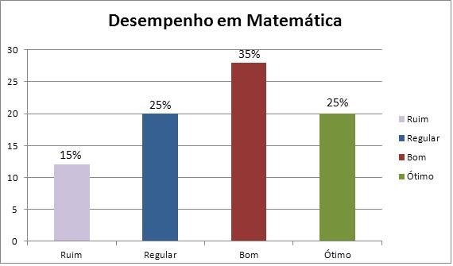
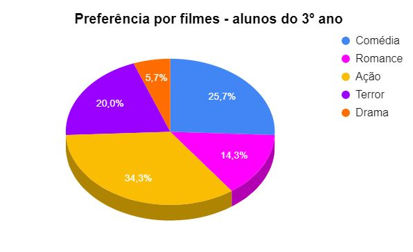

Tabelas e Gráficos
D35-Associar informações apresentadas em listas e/ou tabelas simples aos gráficos que as representam e vice-versa.
As tabelas e os gráficos são recursos utilizados para organizar e apresentar dados de forma visual, facilitando a leitura, interpretação e análise das informações. Esses elementos são amplamente usados na matemática, nas ciências, nas provas escolares (como o SAEB) e no cotidiano, pois ajudam a tornar os dados mais acessíveis e compreensíveis.
Tabelas
As tabelas organizam os dados em colunas e linhas, permitindo a visualização direta de números e informações. Elas são ideais para apresentar grandes quantidades de dados de maneira clara e ordenada, facilitando a comparação entre diferentes categorias ou valores.
Exemplo:
Uma tabela pode apresentar a quantidade de livros lidos por alunos de uma turma:
| Aluno | Livros Lidos |
|---|---|
| João | 4 |
| Ana | 7 |
| Lucas | 5 |
Gráficos
Os gráficos são representações visuais dos dados apresentados nas tabelas. Eles tornam a informação mais visual e ajudam a perceber padrões, tendências e comparações de forma mais rápida.
  Exercicios de analise de gráficos e tabelas Vídeo-aula